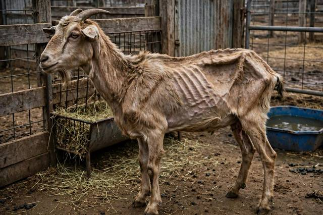

Peste des petits ruminants (PPR), often called goat plague, is a highly contagious viral disease of goats and sheep. It causes fever, discharges from the eyes and nose, sores in the mouth, pneumonia and severe diarrhoea, and it can kill a large share of young animals in an unprotected flock.
In Pakistan, farmers know PPR as بکریوں کا طاعون. It is endemic across the country and one of the most important causes of losses in small ruminants. Worldwide, PPR affects Africa, the Middle East and Asia, and it is a WOAH-listed disease targeted for global eradication by FAO and WOAH.
On this page: the cause, animals affected, clinical signs, diagnosis, treatment principles and prevention.
Cause
PPR is caused by peste des petits ruminants virus (PPRV), a morbillivirus closely related to the rinderpest virus. It spreads through close contact with infected animals, their discharges, and contaminated feed, water and equipment. The virus does not survive long outside the animal, so direct contact between flocks is the main route of spread. PPR is not a risk to people.
Pathogenesis
PPR virus enters through the nose and mouth and first replicates in the lymphoid tissue of the throat and the draining lymph nodes. From there it spreads through the blood to the lymphoid organs, the respiratory tract and the digestive tract, infecting the epithelial cells that line these surfaces.
The virus destroys lymphocytes, the white blood cells that drive immunity, so the animal’s defences collapse and secondary bacterial infections take hold — this is why pneumonia is so common and so severe. Erosions form in the mouth and throughout the gut, causing pain, loss of appetite and profuse watery diarrhoea, while damage to the lungs causes coughing and laboured breathing. Death usually follows dehydration, pneumonia and exhaustion, especially in young goats. Animals that recover develop long-lasting immunity.
Animals Affected
Goats and sheep are the main hosts, and goats usually suffer more severe disease than sheep. Young animals are the most vulnerable. Wild small ruminants can also be infected. Cattle and pigs may be exposed without showing disease and are not important in spreading it.
Clinical Signs
1
High fever(High body temperature)
2
Discharge from the eyes and nose(Watery discharge that becomes thick and crusty)
3
Sores and erosions inside the mouth(Painful sores and erosions in the mouth)
Severe watery diarrhoea and dehydration(Profuse watery diarrhoea leading to dehydration)
7
Loss of appetite(Goat eats less or refuses feed)
8
Rapid weight loss(Quick loss of body condition)
9
Death, especially in young goats(Fatal outcome, most often in young goats)
High feverThick nasal and eye dischargeSores and erosions inside the mouthCoughingLaboured breathing with neck stretched forwardSevere watery diarrhoeaLoss of appetite

Rapid weight lossDeath, especially in young goats
Diagnosis
Clinical signs and a history of recent contact with other flocks raise suspicion, but laboratory confirmation is important because several diseases look similar. Samples may be tested by ELISA or RT-PCR at a veterinary laboratory. Report suspected cases to the local veterinary authority, as PPR is a notifiable disease.
Differential Diagnosis
Several diseases share the fever, discharge and diarrhoea of PPR:
CCPP — severe pneumonia and pleuritis, but no mouth sores and no diarrhoea.
Goat pox — hard skin nodules over the body, with or without pneumonia.
Blue tongue — swollen face and tongue with lameness; discharge and diarrhoea are not typical.
Foot-and-mouth disease — blisters in the mouth and on the feet, with lameness and drooling.
Treatment
There is no specific antiviral cure for PPR. Veterinary care is supportive: fluids, soft palatable feed, shade and nursing, and treatment of secondary bacterial complications under veterinary direction. Early veterinary attention improves the chance of recovery.
Recommended Medicines
1
Fluid therapy – Oral electrolytes / IV fluids(Replaces fluids lost through diarrhoea and dehydration)As prescribed by a veterinarian
2
NSAID – Meloxicam(Reduces fever and pain)0.5 mg/kg IV/SC once
3
Antibiotic – Oxytetracycline(Only for secondary bacterial infection, if the veterinarian diagnoses one)10–20 mg/kg IM or SC daily
⚠ Important Tips:
There is no specific cure for PPR — vaccinate the flock to prevent it.
Use antibiotics only under veterinary advice, and only for secondary infection.
Isolate sick goats and give fluids, soft feed and shade.
Early veterinary attention improves the chance of recovery.
Vaccinate the flock with PPR vaccine — a single vaccination gives long-lasting protection; follow the schedule advised by the livestock department
Quarantine new animals for at least two weeks before mixing them with the flock
Isolate sick animals immediately
Avoid contact with other flocks, especially at markets and watering points
Clean and disinfect housing, feeders and equipment
Report outbreaks to the veterinary authority
Key Takeaway
PPR is preventable by vaccination. Annual vaccination of the flock, quarantine of new animals and prompt reporting are the foundations of control — in Pakistan and worldwide.
Keep herd health records, consult a qualified veterinarian and follow the animal-health authority's current guidance for your region.
References
Standard veterinary references consulted for this guide:
MSD Veterinary Manual
Radostits et al., Veterinary Medicine: A Textbook of the Diseases of Cattle, Horses, Sheep, Pigs and Goats
WOAH Manual of Diagnostic Tests and Vaccines for Terrestrial Animals
High fever, watery discharge from the eyes and nose that becomes thick and crusty, sores inside the mouth, coughing and difficult breathing, severe watery diarrhoea and rapid weight loss. Death is common, especially in young goats.
What causes PPR in goats?
PPR is caused by peste des petits ruminants virus (PPRV), a morbillivirus closely related to the rinderpest virus. It spreads through close contact with infected animals, their discharges, and contaminated feed, water and equipment.
Is PPR dangerous to people?
No. PPR is not a risk to people. It affects goats and sheep, and goats usually suffer more severe disease than sheep.
How is PPR in goats treated?
There is no specific antiviral cure for PPR. Veterinary care is supportive: fluids, soft palatable feed, shade and nursing, and treatment of secondary bacterial complications under veterinary direction. Early veterinary attention improves the chance of recovery.
How can PPR in goats be prevented?
Vaccinate the flock with PPR vaccine, as a single vaccination gives long-lasting protection. Quarantine new animals for at least two weeks, isolate sick animals immediately, and report outbreaks to the veterinary authority.
How is PPR in goats diagnosed?
Clinical signs and a history of recent contact with other flocks raise suspicion, but laboratory confirmation is important. Samples may be tested by ELISA or RT-PCR at a veterinary laboratory. PPR is a notifiable disease, so report suspected cases.
Which vaccine is used for PPR in goats?
PPR vaccine gives long-lasting protection, with a single vaccination protecting the flock. Follow the schedule advised by the livestock department, and vaccinate the whole flock.
Why is my goat coughing and has diarrhoea?
Coughing with difficult breathing and severe watery diarrhoea, along with fever and mouth sores, are typical of PPR in goats. Isolate the animal immediately and contact a veterinarian, as PPR spreads fast and kills quickly.
بکریوں میں طاعون (PPR) کی ویکسین کب لگانی چاہیے؟
پی پی آر کی ویکسین ریوڑ کو لمبے عرصے تک تحفظ دیتی ہے۔ لائیو اسٹاک محکمے کے بتائے ہوئے شیڈول کے مطابق ویکسین لگوائیں۔ نئے جانوروں کو کم از کم دو ہفتے الگ رکھیں اور بیمار جانور کو فوراً الگ کریں۔
✍️ Written by Dr. Shahid Bilal Depal, DVM (PVMC RVMP #15068)
This guide is for educational purposes. Consult a registered veterinarian for diagnosis and treatment.